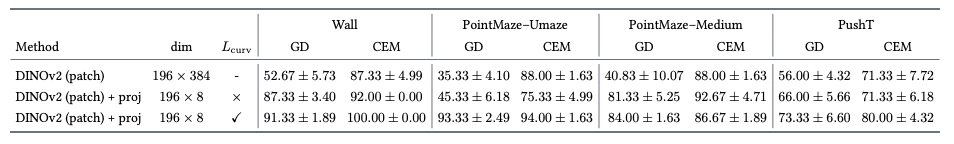
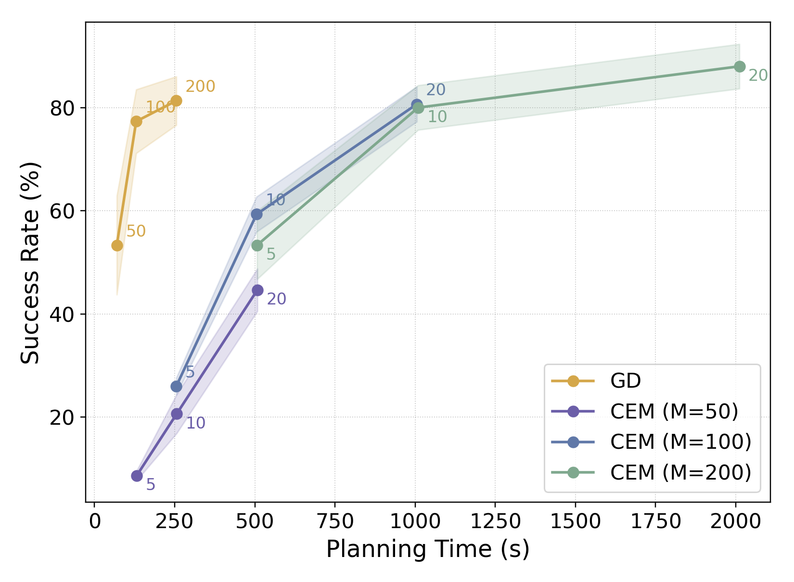
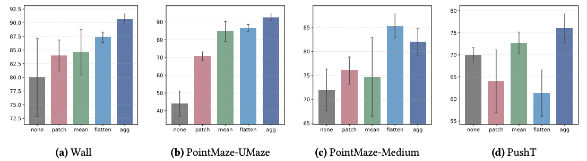
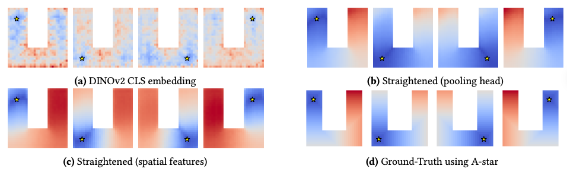

Temporal Straightening for Latent Planning
S1: CEM vs GD

Tab 1. Comparison of GD and CEM Success Rate

Fig 2. Comparison of Performance-Latency Tradeoff. The numbers on the curves denote the optimization steps.
S2: Ablations

Fig 3. Ablations on Curvature Implementations for Spatial Features
S3: Long-Horizon Planning

Fig 4. Distance heatmaps: spatial features and pooled features capture different levels of distance information
Umaze: Use the pooled feature distances as planning cost for long-horizon planning
S5: Deformable
Rope1
Rope2
Granular1
Granular2
For each video, the first row is rendered from simulator and the second is from decoder. The right column is the goal.